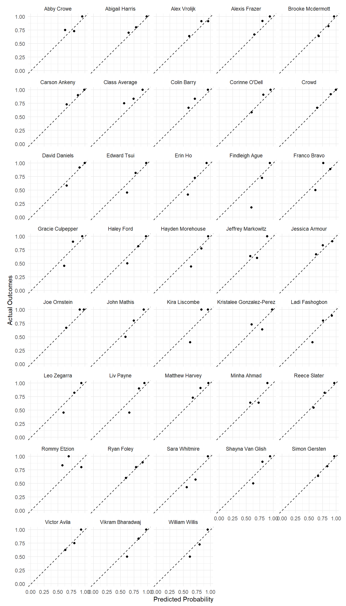

Fall 2024 Predictions
Week 1 (8/26)
Week 2 (9/4)
Week 3 (9/9)
Week 4 (9/16)
Week 5 (9/23)
Week 6 (9/30)
Week 7 (10/7)
Week 8 (10/14)
Week 9 (10/21)
Week 10 (10/28)
Week 11 (11/4)
Week 12 (11/11)
Week 13 (11/18)
Week 14 (11/25)
Leaderboard
| Rank | Name | Correct Calls | Brier Score |
|---|---|---|---|
| 1 | Joe Ornstein | 32/36 | 0.0633 |
| 2 | Crowd | 31/36 | 0.0874 |
| 3 | Carson Ankeny | 27/31 | 0.0962 |
| 4 | Corinne O’Dell | 28/34 | 0.0995 |
| 5 | Alexis Frazer | 30/35 | 0.1036 |
| 6 | David Daniels | 30/36 | 0.1036 |
| 7 | Matthew Harvey | 28/32 | 0.1081 |
| 8 | Class Average | 31/36 | 0.1115 |
| 9 | Liv Payne | 24/31 | 0.1149 |
| 10 | Abigail Harris | 25/30 | 0.1154 |
| 11 | Shayna Van Glish | 24/30 | 0.1163 |
| 12 | Kira Liscombe | 24/30 | 0.1197 |
| 13 | Gracie Culpepper | 24/31 | 0.1208 |
| 14 | Reece Slater | 26/33 | 0.1225 |
| 15 | Leo Zegarra | 25/33 | 0.1239 |
| 16 | Vikram Bharadwaj | 28/36 | 0.1247 |
| 17 | Alex Vrolijk | 27/33 | 0.1290 |
| 18 | Victor Avila | 19/24 | 0.1307 |
| 19 | Abby Crowe | 28/34 | 0.1319 |
| 20 | Colin Barry | 29/35 | 0.1333 |
| 21 | Brooke Mcdermott | 26/32 | 0.1336 |
| 22 | Haley Ford | 26/34 | 0.1340 |
| 23 | John Mathis | 23/30 | 0.1341 |
| 24 | Simon Gersten | 26/32 | 0.1353 |
| 25 | Franco Bravo | 23/29 | 0.1395 |
| 26 | Edward Tsui | 25/33 | 0.1401 |
| 27 | Kristalee Gonzalez-Perez | 26/33 | 0.1422 |
| 28 | Jessica Armour | 28/35 | 0.1454 |
| 29 | Hayden Morehouse | 20/27 | 0.1494 |
| 30 | Rommy Etzion | 14/16 | 0.1498 |
| 31 | William Willis | 25/34 | 0.1564 |
| 32 | Ryan Foley | 22/29 | 0.1595 |
| 33 | Erin Ho | 24/34 | 0.1596 |
| 34 | Ladi Fashogbon | 20/29 | 0.1623 |
| 35 | Minha Ahmad | 25/33 | 0.1654 |
| 36 | Jeffrey Markowitz | 22/31 | 0.1682 |
| 37 | Sara Whitmire | 14/21 | 0.1687 |
| 38 | Findleigh Ague | 21/33 | 0.1693 |
Calibration Plots
